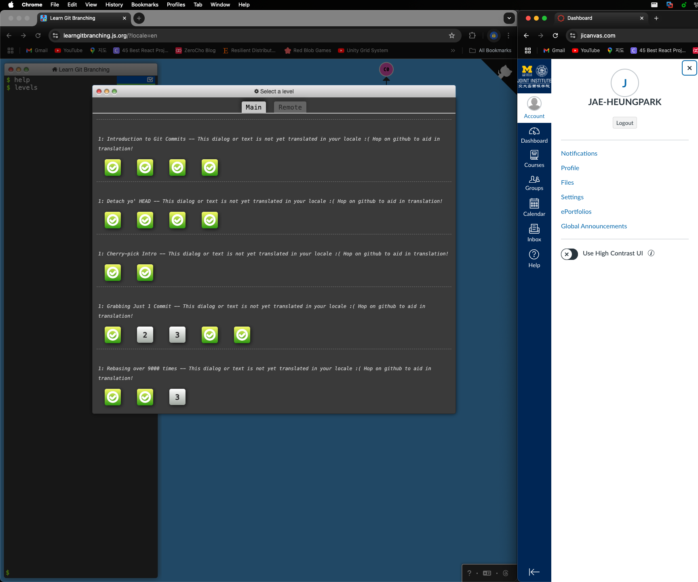

Lab 03
ECE4820 FA2024 Introduction to Operating Systems
518370990004 Jae Heung Park
1 Project 1: presentations (part 2)
2 Source code
When joining an existing two aspects are critical. First it is very important to understand the general structure of the project while also getting familiar with the coding style of the other developers. Then when starting to code one wants to keep track of the changes, while also being able to export and import them in a simple fashion.
2.1 Linux kernel walk-through
In order to be more effective when solving homework 2 exercise 2, pay attention on how the TAs use the tools presented in lab 1 in order to find their way in Linux kernel source code. Carefully listen to the explanations related to the structure of code and common C strategies you might (re)discover.
2.2 The diff and patch commands
When dealing with source code two main situations are likely to arise: (i) you want to share your changes with others, or (ii) you want to apply changed performed by someone else. Most of the time updates on source code concern few lines scattered over several files. Therefore instead of sharing all the files it is much more convenient to only specify which lines should be updated, and how. This is the role of the diff command. The patch command is used to apply the changes previously created with diff. Both diff and patch programs should already be installed in your OS.
- Read the man pages of
diffandpatch - Edit a file of your choice in /usr/src, e.g. add a comment to a file
- Using the diff command, create a patch corresponding to the above changes
- Retrieve your patch on your Linux system
- Apply your patch to the copy of /usr/src_orig on your Linux system
- Revert the patch
Read the man pages of diff and patch
DIFF(1) User Commands DIFF(1)
NAME
diff - compare files line by line
SYNOPSIS
diff [OPTION]... FILES
DESCRIPTION
Compare FILES line by line.
Mandatory arguments to long options are mandatory for short options
too.
Manual of patch is longer.
PATCH(1) General Commands Manual PATCH(1)
NAME
patch - apply a diff file to an original
SYNOPSIS
patch [options] [originalfile [patchfile]]
but usually just
patch -pnum <patchfile
DESCRIPTION
patch takes a patch file patchfile containing a difference listing pro??
duced by the diff program and applies those differences to one or more
original files, producing patched versions. Normally the patched ver??
sions are put in place of the originals. Backups can be made; see the
-b or --backup option. The names of the files to be patched are usu??
ally taken from the patch file, but if there's just one file to be
patched it can be specified on the command line as originalfile.
Upon startup, patch attempts to determine the type of the diff listing,
unless overruled by a -c (--context), -e (--ed), -n (--normal), or -u
(--unified) option. Context diffs (old-style, new-style, and unified)
and normal diffs are applied by the patch program itself, while ed
diffs are simply fed to the ed(1) editor via a pipe.
patch tries to skip any leading garbage, apply the diff, and then skip
any trailing garbage. Thus you could feed an article or message con??
taining a diff listing to patch, and it should work. If the entire
diff is indented by a consistent amount, if lines end in CRLF, or if a
diff is encapsulated one or more times by prepending "- " to lines
starting with "-" as specified by Internet RFC 934, this is taken into
account. After removing indenting or encapsulation, lines beginning
with # are ignored, as they are considered to be comments.
With context diffs, and to a lesser extent with normal diffs, patch can
detect when the line numbers mentioned in the patch are incorrect, and
attempts to find the correct place to apply each hunk of the patch. As
a first guess, it takes the line number mentioned for the hunk, plus or
minus any offset used in applying the previous hunk. If that is not
the correct place, patch scans both forwards and backwards for a set of
lines matching the context given in the hunk. First patch looks for a
place where all lines of the context match. If no such place is found,
and it's a context diff, and the maximum fuzz factor is set to 1 or
more, then another scan takes place ignoring the first and last line of
context. If that fails, and the maximum fuzz factor is set to 2 or
more, the first two and last two lines of context are ignored, and an??
other scan is made. (The default maximum fuzz factor is 2.)
Hunks with less prefix context than suffix context (after applying
fuzz) must apply at the start of the file if their first line number
is 1. Hunks with more prefix context than suffix context (after apply??
ing fuzz) must apply at the end of the file.
If patch cannot find a place to install that hunk of the patch, it puts
the hunk out to a reject file, which normally is the name of the output
file plus a .rej suffix, or # if .rej would generate a file name that
is too long (if even appending the single character # makes the file
name too long, then # replaces the file name's last character).
The rejected hunk comes out in unified or context diff format. If the
input was a normal diff, many of the contexts are simply null. The
line numbers on the hunks in the reject file may be different than in
the patch file: they reflect the approximate location patch thinks the
failed hunks belong in the new file rather than the old one.
As each hunk is completed, you are told if the hunk failed, and if so
which line (in the new file) patch thought the hunk should go on. If
the hunk is installed at a different line from the line number speci??
fied in the diff, you are told the offset. A single large offset may
indicate that a hunk was installed in the wrong place. You are also
told if a fuzz factor was used to make the match, in which case you
should also be slightly suspicious. If the --verbose option is given,
you are also told about hunks that match exactly.
...
Edit a file of your choice in /usr/src, e.g. add a comment to a file
First, make a backup for usr/src
Now edit file inside /usr/src.
jhpark@jhparkvm:/usr/src$ ls linux-headers-6.5.0-35-generic/
arch Documentation init Kconfig mm samples tools
block drivers io_uring kernel Module.symvers scripts ubuntu
certs fs ipc lib net security usr
crypto include Kbuild Makefile rust sound virt
jhpark@jhparkvm:/usr/src$ ls linux-hwe-6.5-headers-6.5.0-35/
arch Documentation init Kconfig mm scripts ubuntu
block drivers io_uring kernel net security usr
certs fs ipc lib rust sound virt
crypto include Kbuild Makefile samples tools
I decided to add a comment to a Makefile.
sudo nano /usr/src/linux-headers-6.5.0-35-generic/Makefile
# Test comment made by JH Park for ECE482
Using the diff command, create a patch corresponding to the above changes
sudo diff -u /usr/src/linux-headers-6.5.0-35-generic/Makefile /usr/src_backup/linux-headers-6.5.0-35-generic/Makefile > jhpark_patch.patch
Patch created.
Retrieve your patch on your Linux system
Patch command updated the difference of code I added well.
Patch comment updated.
--- /usr/src/linux-headers-6.5.0-35-generic/Makefile 2024-10-21 01:14:53.470376307 +0800
+++ /usr/src_backup/linux-headers-6.5.0-35-generic/Makefile 2024-10-21 01:11:46.859876208 +0800
@@ -1,4 +1,3 @@
-# Test comment made by JH Park for ECE482
# SPDX-License-Identifier: GPL-2.0
VERSION = 6
PATCHLEVEL = 5
Apply your patch to the copy of /usr/src_orig on your Linux system
I made backup branch name as usr/src_backup so copied again.
Now apply patch to newly created usr/src_orig.
Finally, check if change is applied.
head /usr/src/linux-headers-6.5.0-35-generic/Makefile
head /usr/src_orig/linux-headers-6.5.0-35-generic/Makefile
It is applied successfully.
Revert the patch
Execute patch with revert option
2.3 Basic git usage
The programs patch and diff are very useful however when big projects are managed by many people at the same time they are not convenient to handle. A more advanced, automatised approach is required such as to help solving collisions in a more simple way. For instance user A commits some changes on the initial version of the file foo.c. Then user B does the same. Notice that changes made by B may collide with updates from A. To prevent such issues B should have worked based on A?셲 version of the foo.c file.
To overcome such kind of issues and render things smoother and easier several systems were created; at the moment the most commonly used is called git, older ones such as svn or cvs are still used in some places. In the remainder of this course you will be required to use the gitea in order to keep track of your project work.
Go to http://learngitbranching.js.org/ and complete the following levels:
- Main ??Introduction Sequence: all;
- Main ??Ramping Up: all;
- Main ??A mixed bag: 1, 4;
- Remote ??Push & Pull ??Git Remotes!: 1-4, 6;

3 Scripting and regular expressions
Two programming languages often used in conjunction with Bash are sed and awk.
Pipelining the output of ifconfig to awk return only the ip address of your current active network
connection (the active network interface can be passed to ifconfig).
Install network tools
Ip check commands by ifconfig and awk is required.
Returns this ip address
IP address from my Linux Ubuntu installed in VMWare fusion
IP address from my Mac OS terminal.